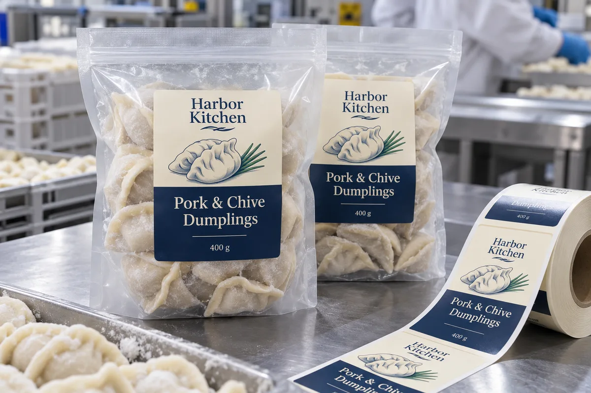

Separate service temperature from application temperature
A buyer might ask for a "freezer label" and still omit the most important detail: when is it applied? A label put on a dry bag before freezing only needs to survive later cold storage. A label put onto a frosty bag after freezing needs an adhesive and line process that can make initial contact in very different conditions. UPM Raflatac's food-packaging overview distinguishes label solutions for applications before and after freezing. That is the question I would put at the top of a purchase brief.
A composite dumpling maker prints one shared bag and uses labels to distinguish two recipes. During normal shifts the team labels just after bagging. During a holiday rush, some bags are frozen first and labeled later. Those two workflows should not silently share a material decision. Either keep the application step consistent or trial both paths.
Give the label a stable panel
Dumpling bags puff and settle after filling. A die line that looks centered on an empty flat bag can bend over dumplings, a bottom fold or a side seal once packed. I would mark the actual usable panel on several filled bags and leave clear space around heat seals, zipper tracks and any transparent food window. The fictional Harbor Kitchen photograph shows the front label on the central panel, but it is not a validated line trial.
If the bag film is very slick or changes supplier, the adhesive may need a different construction. Ask the bag supplier about the outer surface and any treatments; do not infer it from the inside food-contact layer.
Protect legibility, not just adhesion
Freezer handling can scuff a printed surface and condensation during thaw can change how small text reads. A protected film face may be useful for a brand label, but a paper construction could still work under controlled conditions. I would compare readability and edge lift after bag stacking, carton rubbing, freezing and the expected time in a household freezer.
The image artwork is fictional and intentionally simplified. It is not a substitute for the final market-specific ingredient, allergen, storage instruction, lot and date review. If variable information is overprinted at packing, reserve a clean coding zone that does not fold around the product.
What a useful trial looks like
Apply labels to real filled bags at the intended stage, with normal production pressure and operator handling. Include several bags from the start and end of a roll. Photograph corners before freezing, after frozen storage and after a brief thaw-handling step. If labels fail only when applied to frosty bags, changing face stock alone may miss the cause.
Send bag dimensions after filling, outer-film specification, seal layout, application temperature, freezing sequence, product shape, SKU count, code method and order quantity. A good quote should be about the process that will actually run.
Our buying view
What we would decide first
Confirm the labeling stage before choosing an adhesive marketed for freezer use. A short trial on the actual pack can settle that question before a full printed roll is ordered.
Related buyer guides
Frequently asked questions
Can I label dumpling bags after freezing?
Possibly, but the adhesive and line must be tested on the actual frosty bag. Labeling a dry bag before freezing is a different use case.
Should the label cover the bag seal?
No. Keep the label clear of functional seals, zipper tracks and other moving pack features.
Review your label specification
Send the real package, dimensions, order quantity, labeling stage, storage conditions and artwork. We can discuss a practical material and proof route.